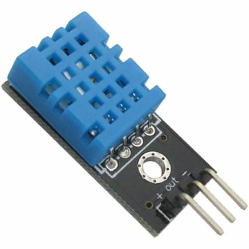

Nota
Hola, ¡bienvenido a la comunidad de entusiastas de SunFounder para Raspberry Pi, Arduino y ESP32 en Facebook! Sumérgete en el mundo de Raspberry Pi, Arduino y ESP32 junto a otros entusiastas.
¿Por qué unirse?
Soporte Experto: Resuelve problemas posventa y desafíos técnicos con ayuda de nuestra comunidad y equipo.
Aprende y Comparte: Intercambia consejos y tutoriales para mejorar tus habilidades.
Avances Exclusivos: Accede antes que nadie a anuncios de nuevos productos y adelantos.
Descuentos Especiales: Disfruta de descuentos exclusivos en nuestros productos más recientes.
Promociones Festivas y Sorteos: Participa en sorteos y promociones en épocas festivas.
👉 ¿Listo para explorar y crear con nosotros? Haz clic en [Aquí] y únete hoy mismo.
2.2.3 DHT-11
Introducción
El sensor digital de temperatura y humedad DHT11 es un sensor compuesto que proporciona una salida de señal digital calibrada para temperatura y humedad. Se aplican tecnologías avanzadas de módulos de recolección digital y de sensado de temperatura y humedad para asegurar alta confiabilidad y excelente estabilidad en el producto.
Los sensores incluyen un sensor resistivo de humedad y un sensor de temperatura NTC, conectados a un microcontrolador de alto rendimiento de 8 bits.
Componentes

Principio
El DHT11 es un sensor digital de temperatura y humedad básico y de bajo costo. Utiliza un sensor capacitivo de humedad y un termistor para medir el aire circundante, y envía una señal digital a través del pin de datos (no se necesitan pines de entrada analógicos).
{kind=link}
Solo tiene tres pines: VCC, GND y DATA. El proceso de comunicación comienza cuando la línea de datos envía señales de inicio al DHT11, que recibe las señales y devuelve una señal de respuesta. Luego, el dispositivo anfitrión recibe la señal de respuesta y empieza a recibir datos de humedad y temperatura en 40 bits (8 bits para la humedad entera + 8 bits para el decimal de la humedad + 8 bits para la temperatura entera + 8 bits para el decimal de la temperatura + 8 bits de verificación). Para obtener más detalles, consulta la hoja de datos del DHT11.
Diagrama Esquemático

Procedimiento Experimental
Paso 1: Construye el circuito.

Para Usuarios del Lenguaje C
Paso 2: Ve a la carpeta del código.
cd ~/davinci-kit-for-raspberry-pi/c/2.2.3/
Paso 3: Compila el código.
gcc 2.2.3_DHT.c -lwiringPi
Paso 4: Ejecuta el archivo ejecutable.
sudo ./a.out
Una vez que el código se ejecute, el programa imprimirá la temperatura y humedad detectadas por el DHT11 en la pantalla de la computadora.
Nota
Si no funciona después de ejecutar, o si aparece el mensaje de error: "wiringPi.h: No such file or directory", consulta c code is not working?.
Código
#include <wiringPi.h>
#include <stdio.h>
#include <stdlib.h>
#include <stdint.h>
#define MAXTIMINGS 85 // Maximum number of timing transitions
int dht11_dat[5] = {0, 0, 0, 0, 0}; // Data array to hold sensor values
// Function to read data from DHT11 sensor
void read_dht11_dat(int GPIOPIN)
{
uint8_t currState;
uint8_t laststate = HIGH;
uint8_t counter = 0;
uint8_t j = 0;
uint8_t i;
float f; // Temperature in Fahrenheit
// Reset data array before each read
dht11_dat[0] = dht11_dat[1] = dht11_dat[2] = dht11_dat[3] = dht11_dat[4] = 0;
// Pull pin down for 18 milliseconds to initiate communication
pinMode(GPIOPIN, OUTPUT);
digitalWrite(GPIOPIN, LOW);
delay(18);
// Then pull it up for 40 microseconds
digitalWrite(GPIOPIN, HIGH);
delayMicroseconds(40);
// Prepare to read the pin
pinMode(GPIOPIN, INPUT);
// Detect change and read data
for (i = 0; i < MAXTIMINGS; i++)
{
counter = 0;
// Count how long each state lasts
while (digitalRead(GPIOPIN) == laststate)
{
counter++;
delayMicroseconds(2);
if (counter == 255)
{
break;
}
}
// Save the current state
laststate = digitalRead(GPIOPIN);
if (counter == 255) break;
// Ignore first 3 transitions (DHT11 response signal)
if ((i >= 4) && (i % 2 == 0))
{
// Shift bits and store data
dht11_dat[j/8] <<= 1;
if (counter > 16)
{
dht11_dat[j/8] |= 1;
}
j++;
}
}
// Check if we received 40 bits (5 bytes) and verify checksum
if ((j >= 40) && (dht11_dat[4] == ((dht11_dat[0] + dht11_dat[1] + dht11_dat[2] + dht11_dat[3]) & 0xFF)) )
{
// Convert temperature to Fahrenheit
f = dht11_dat[2] * 9.0 / 5.0 + 32;
printf("Humidity = %d.%d %% Temperature = %d.%d °C (%.1f °F)\n",
dht11_dat[0], dht11_dat[1], dht11_dat[2], dht11_dat[3], f);
}
else
{
printf("Data not good, skip\n");
}
}
int main (void)
{
printf("Raspberry Pi wiringPi DHT11 Temperature test program\n");
// Initialize wiringPi using BCM GPIO pin numbering
if (wiringPiSetupGpio() == -1)
{
exit(1);
}
while(1)
{
// Read data from DHT11 connected to GPIO pin 17
read_dht11_dat(17);
delay(1000); // Wait 1 second before next read
}
return 0;
}
Explicación del Código
Incluir Encabezados: El código incluye los encabezados necesarios para las funciones de wiringPi y la entrada/salida estándar.
#include <wiringPi.h> #include <stdio.h> #include <stdlib.h> #include <stdint.h>
Definir Constantes:
MAXTIMINGS: El número máximo de transiciones de tiempo esperadas del sensor DHT11 (85).
#define MAXTIMINGS 85 // Número máximo de transiciones de tiempo
Array de Datos Global:
dht11_dat[5]: Un array para almacenar los 5 bytes de datos recibidos del sensor DHT11.
int dht11_dat[5] = {0, 0, 0, 0, 0}; // Array de datos para almacenar los valores del sensor
Función
read_dht11_dat(int GPIOPIN): Lee datos del sensor DHT11 conectado al pin GPIO especificado.Inicialización: Reinicia el array dht11_dat a cero antes de cada lectura.
dht11_dat[0] = dht11_dat[1] = dht11_dat[2] = dht11_dat[3] = dht11_dat[4] = 0;
Señal de Inicio: Baja el pin GPIO durante al menos 18 milisegundos para indicar al DHT11 que comience a enviar datos.
pinMode(GPIOPIN, OUTPUT); digitalWrite(GPIOPIN, LOW); delay(18); // 18 milisegundos
Levanta el pin GPIO durante 40 microsegundos.
digitalWrite(GPIOPIN, HIGH); delayMicroseconds(40); // 40 microsegundos
Configura el pin GPIO en modo de entrada para leer datos del sensor.
pinMode(GPIOPIN, INPUT);
Bucle de Lectura de Datos: El bucle se ejecuta hasta MAXTIMINGS veces para leer los bits de datos.
Para cada transición (de alto a bajo o de bajo a alto), mide cuánto tiempo permanece el pin en cada estado.
for (i = 0; i < MAXTIMINGS; i++) { counter = 0; while (digitalRead(GPIOPIN) == laststate) { counter++; delayMicroseconds(2); if (counter == 255) { break; } } laststate = digitalRead(GPIOPIN); // ... resto del bucle }
Extracción de Bits de Datos: Las primeras 3 transiciones se ignoran ya que son parte de la respuesta inicial del DHT11.
Para cada bit de datos, determina si el bit es 0 o 1 según la duración que el pin permanece en alto.
if ((i >= 4) && (i % 2 == 0)) { dht11_dat[j/8] <<= 1; if (counter > 16) { dht11_dat[j/8] |= 1; } j++; }
Verificación de Suma de Comprobación: Después de recibir todos los bits, el código verifica la suma de comprobación para asegurar la integridad de los datos.
if ((j >= 40) && (dht11_dat[4] == ((dht11_dat[0] + dht11_dat[1] + dht11_dat[2] + dht11_dat[3]) & 0xFF)) )
Si la suma de comprobación es correcta, imprime los valores de humedad y temperatura.
f = dht11_dat[2] * 9.0 / 5.0 + 32; printf("Humedad = %d.%d %% Temperatura = %d.%d °C (%.1f °F)\n", dht11_dat[0], dht11_dat[1], dht11_dat[2], dht11_dat[3], f);
Si la suma de comprobación falla, imprime un mensaje de error.
else { printf("Datos incorrectos, omitir\n"); }
Función Principal:
Imprime un mensaje de inicio.
printf("Programa de prueba de temperatura DHT11 con Raspberry Pi wiringPi\n");
Inicializa wiringPi usando la numeración de pines GPIO de BCM.
if (wiringPiSetupGpio() == -1) { exit(1); }
Entra en un bucle infinito para leer datos del sensor DHT11 cada segundo.
while(1) { read_dht11_dat(17); delay(1000); // espera 1 segundo }
Para Usuarios del Lenguaje Python
Paso 2: Dirígete a la carpeta del código.
cd ~/davinci-kit-for-raspberry-pi/python/
Paso 3: Ejecuta el archivo ejecutable.
sudo python3 2.2.3_DHT.py
Una vez que el código se ejecuta, el programa imprimirá en pantalla la temperatura y la humedad detectadas por el DHT11.
Código
Nota
Puedes Modificar/Restablecer/Copiar/Ejecutar/Detener el código a continuación.
Pero antes de eso, debes ir a la ruta del código fuente como davinci-kit-for-raspberry-pi/python.
from gpiozero import OutputDevice, InputDevice
import time
class DHT11():
MAX_DELAY_COUINT = 100
BIT_1_DELAY_COUNT = 10
BITS_LEN = 40
def __init__(self, pin, pull_up=False):
self._pin = pin
self._pull_up = pull_up
def read_data(self):
bit_count = 0
delay_count = 0
bits = ""
# -------------- send start --------------
gpio = OutputDevice(self._pin)
gpio.off()
time.sleep(0.02)
gpio.close()
gpio = InputDevice(self._pin, pull_up=self._pull_up)
# -------------- wait response --------------
while gpio.value == 1:
pass
# -------------- read data --------------
while bit_count < self.BITS_LEN:
while gpio.value == 0:
pass
# st = time.time()
while gpio.value == 1:
delay_count += 1
# break
if delay_count > self.MAX_DELAY_COUINT:
break
if delay_count > self.BIT_1_DELAY_COUNT:
bits += "1"
else:
bits += "0"
delay_count = 0
bit_count += 1
# -------------- verify --------------
humidity_integer = int(bits[0:8], 2)
humidity_decimal = int(bits[8:16], 2)
temperature_integer = int(bits[16:24], 2)
temperature_decimal = int(bits[24:32], 2)
check_sum = int(bits[32:40], 2)
_sum = humidity_integer + humidity_decimal + temperature_integer + temperature_decimal
# print(bits)
# print(humidity_integer, humidity_decimal, temperature_integer, temperature_decimal)
# print(f'sum:{_sum}, check_sum:{check_sum}')
# print()
if check_sum != _sum:
humidity = 0.0
temperature = 0.0
else:
humidity = float(f'{humidity_integer}.{humidity_decimal}')
temperature = float(f'{temperature_integer}.{temperature_decimal}')
# -------------- return --------------
return humidity, temperature
if __name__ == '__main__':
dht11 = DHT11(17)
while True:
humidity, temperature = dht11.read_data()
print(f"{time.time():.3f} temperature:{temperature}°C humidity: {humidity}%")
time.sleep(2)
Explicación del código
def read_data(self):
bit_count = 0
delay_count = 0
bits = ""
# -------------- send start --------------
gpio = OutputDevice(self._pin)
gpio.off()
time.sleep(0.02)
gpio.close()
gpio = InputDevice(self._pin, pull_up=self._pull_up)
#...
Esta función implementa las funcionalidades del DHT11. Almacena los datos detectados en el array bits[]. El DHT11 transmite datos de 40 bits cada vez. Los primeros 16 bits están relacionados con la humedad, los 16 bits intermedios con la temperatura, y los últimos ocho bits se utilizan para verificación. El formato de los datos es:
8 bits de datos enteros de humedad +8 bits de datos decimales de humedad +8 bits de datos enteros de temperatura + 8 bits de datos decimales de temperatura + 8 bits de verificación.
Cuando se detecta la validez mediante el bit de verificación, la función devuelve dos resultados: 1. error; 2. humedad y temperatura.
_sum = humidity_integer + humidity_decimal + temperature_integer + temperature_decimal
if check_sum != _sum:
humidity = 0.0
temperature = 0.0
else:
humidity = float(f'{humidity_integer}.{humidity_decimal}')
temperature = float(f'{temperature_integer}.{temperature_decimal}')
Por ejemplo, si los datos recibidos son 00101011 (valor de 8 bits del entero de humedad) 00000000 (valor de 8 bits del decimal de humedad) 00111100 (valor de 8 bits del entero de temperatura) 00000000 (valor de 8 bits del decimal de temperatura) 01100111 (bit de verificación)
Cálculo:
00101011+00000000+00111100+00000000=01100111.
Si el resultado final es igual al dato del bit de verificación, la transmisión de datos es anómala: devuelve False.
Si el resultado final es igual al dato del bit de verificación, los datos recibidos son correctos,
y se devolverán humidity y temperature con la salida:
"Humedad = 43%, Temperatura = 60°C".